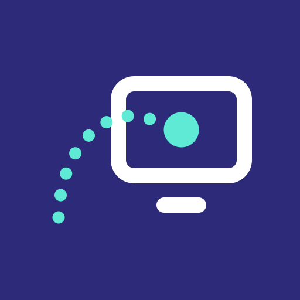

HopviewPrivacy Policy
Effective 17 November 2026 · Türkçe
Hopview lets you control your own Mac from your own iPhone or iPad. It is built so that we, the developer, never receive your screen, your input, your files or any personal data.
What we collect
Nothing. Hopview has no user accounts, no analytics, no advertising, no tracking and no servers operated by us. We cannot see which devices you use or when you connect.
How your connection works
- Your iPhone or iPad and your Mac join your own Tailscale network (tailnet). You sign in to Tailscale with an account you choose; that sign-in happens on Tailscale's website.
- Screen, keyboard, mouse and clipboard data travel end-to-end encrypted (WireGuard) between your devices, directly whenever possible. If no direct path exists, Tailscale relays the encrypted packets; relays cannot decrypt them.
- To run your network, Tailscale's coordination service processes network metadata such as device names, operating system, IP addresses, public keys and your Tailscale login. This is governed by Tailscale's privacy policy. Hopview turns off Tailscale's optional diagnostic log upload.
Data stored on your devices
- iPhone/iPad: a session key for your Mac in the iOS Keychain (protected by Face ID or Touch ID), your settings, and the Tailscale node state inside the app's container.
- Mac: your PIN (as a salted hash), the list of signed-in devices, settings, the Tailscale node state and a local log file in your user Library folder.
Deleting the app removes this data from that device. On the Mac, “Sign Out All Devices” in the Hopview menu revokes every saved session.
Purchases
Subscriptions are processed by Apple. We receive no payment details or personal information. Manage or cancel your subscription in your App Store account settings.
Children
Hopview is a general-purpose utility and does not knowingly collect any data from anyone, including children.
Changes and contact
If this policy changes, we will update this page and its effective date. Questions: h.yalnizcan@gmail.com.
Gizlilik Politikası
Yürürlük: 17 Kasım 2026
Hopview, kendi Mac'ini kendi iPhone ya da iPad'inden kontrol etmeni sağlar. Ekranın, girdilerin, dosyaların ya da kişisel verilerin geliştiriciye hiçbir zaman ulaşmayacak şekilde tasarlanmıştır.
Topladığımız veriler
Hiçbiri. Hopview'da kullanıcı hesabı, analiz, reklam, izleme ya da bizim işlettiğimiz bir sunucu yoktur. Hangi cihazları kullandığını ya da ne zaman bağlandığını göremeyiz.
Bağlantı nasıl çalışır
- iPhone ya da iPad'in ve Mac'in kendi Tailscale ağına (tailnet) katılır. Tailscale'e seçtiğin bir hesapla, Tailscale'in sitesinde giriş yaparsın.
- Ekran, klavye, fare ve pano verisi cihazların arasında uçtan uca şifreli (WireGuard), mümkün olduğunda doğrudan gider. Doğrudan yol yoksa şifreli paketleri Tailscale aktarır; aktarıcılar içeriği çözemez.
- Ağının çalışması için Tailscale'in koordinasyon hizmeti cihaz adı, işletim sistemi, IP adresleri, açık anahtarlar ve Tailscale girişin gibi ağ bilgilerini işler. Bu, Tailscale'in gizlilik politikasına tabidir. Hopview, Tailscale'in isteğe bağlı tanılama günlüğü gönderimini kapatır.
Cihazlarında saklananlar
- iPhone/iPad: iOS Anahtar Zinciri'nde Mac oturum anahtarı (Face ID ya da Touch ID korumalı), ayarların ve uygulama klasöründe Tailscale düğüm durumu.
- Mac: PIN'in (tuzlanmış özet olarak), giriş yapmış cihazların listesi, ayarlar, Tailscale düğüm durumu ve kullanıcı Kitaplığı'nda yerel bir günlük dosyası.
Uygulamayı silmek bu verileri o cihazdan kaldırır. Mac'te Hopview menüsündeki “Kayıtlı bütün cihazların oturumunu kapat” bütün oturumları iptal eder.
Satın almalar
Abonelikler Apple tarafından işlenir. Ödeme bilgisi ya da kişisel bilgi almayız. Aboneliğini App Store hesap ayarlarından yönetebilir ya da iptal edebilirsin.
Değişiklikler ve iletişim
Politika değişirse bu sayfa ve yürürlük tarihi güncellenir. Sorular: h.yalnizcan@gmail.com.